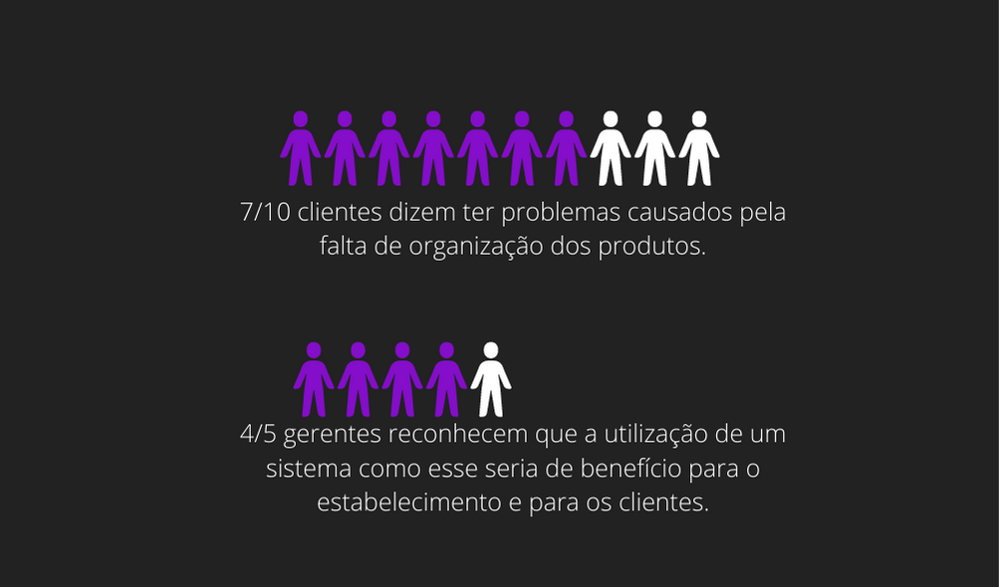

O propósito é agilizar o tráfego de clientes nos supermercados, mas que também pode ser implementada em outros ambientes comerciais, por isso uso do QR Code.
De acordo com diversos problemas que encontramos nos supermercados, como por exemplo falta de preço nas prateleiras, etiquetas trocadas, leitor não funcionando e/ou não saber a somatória final da compra, pesquisas foram feitas nesse ambiente e concluiu-se que a necessidade de uma esquematização mais eficiente é grande.
Ter um sistema que monta sua lista de compras em tempo real ao adicionar o produto no carrinho e permite que em um clique se comunique diretamente com o caixa do supermercado repara a ineficiência que hoje há nesses comércios.